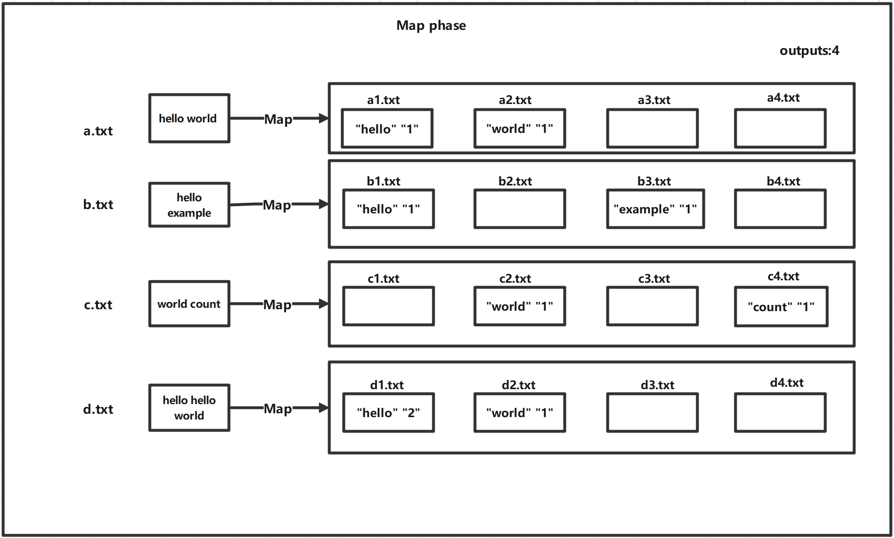
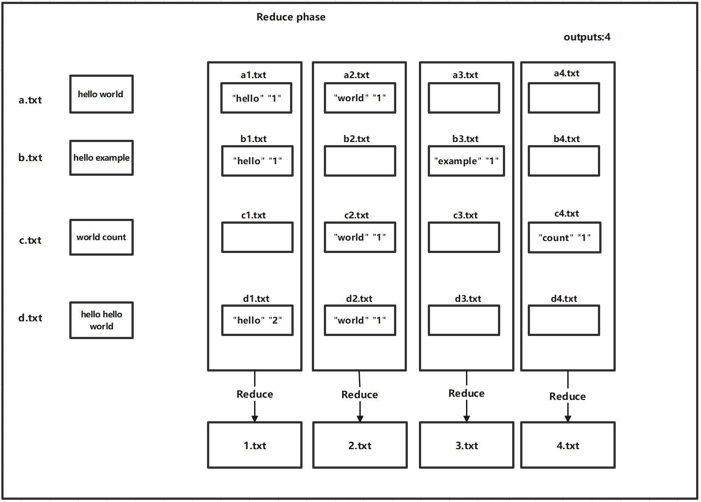

A distributed system is a system whose components are located on different networked computers, which communicate and coordinate their actions by passing messages to one another. A well-designed distributed system provides not only efficiency and scalability, but also fault tolerance and economy. Hence, distributed systems are becoming more and more important in building today's cloud and big-data systems.
In this lab, you will be implementing, with C, some most important infrastructures in distributed computing, and thus gain a deeper understanding of the rationals behind distributed computing system design and implementation. First, you will learn what are remote procedure calls (RPCs), and will use them to build some interesting services. Second, you will implement MapReduce, one of the most influential distributed computing infrastructures. Third, you will implement a sharded key-value store, whereas similar systems powers many popular websites.
You should download this code to start with this lab.
When you finished the lab, zip you code files with file name ID-lab-5.zip (e.g., SA19225789-lab-5.zip), and submit it to Online Teaching Platform. The deadline is 23:59 of Nov. 12, 2023 (Beijing time). Any late submission will NOT be accepted.
Remote procedure call is a communications protocol that allows a program to call a program or service on another computer on a network. It allows us to execute a function on one machine and the function actually runs on another machine and returns the result. This mechanism is particularly suitable for distributed systems, allowing interaction between different systems and languages.
gorpc is an RPC framework written in Go language, providing a simple API that makes it easy to integrate RPC functionality into Go projects. gorpc utilizes efficient serialization and deserialization methods, as well as optimized network communication protocols, to deliver high-performance RPC services. In addition, gorpc supports a variety of transport protocols and serialization formats.
To use GoPRPC, you first need to install the Go language in your environment:
css-lab@tiger:~$ sudo apt-get install golang
css-lab@tiger:~$go version
go version go1.18.1 linux/amd64
If you see the above information, the installation is successful.
In this part, we will create a square server using RPC. The client will send a number, and the server will square the number and return the result to the client.
Next, we will implement a feature to count the number of words in a string. The string-client will send hello, world to the string-service, and the string-server will count the number of words and return the result.
Similarly, we can also implement RPC-based cloud data structures. For example, you can design a stack and some of its operations on the server side and try to call it on the client side.
In a distributed scenario, a race condition is a situation where multiple distributed components attempt to access and modify a shared resource simultaneously, leading to unpredictable results. To avoid this, locks can be used to ensure that only one component can access or modify the resource at any given time. In this way, locks provide a mechanism to ensure that operations on shared resources are atomic, thereby eliminating potential race conditions.
When multiple threads try to modify a shared counter at the same time, data inconsistency may result if there is no appropriate synchronization mechanism. Specifically, two or more threads may read the same value of the counter at the same time, and then perform increment or decrement operations based on this value. In this way, their modifications may overwrite each other, resulting in the final count value not being the expected sum. This situation is often called a race condition.
When there are multiple clients or multiple threads accessing the sever, the stack of the RPC implementation also has data competition, so we need to use some methods to ensure data security
In this part, you need to build a MapReduce library for distributed computing, just like the Google MapReduce paper depicts. To make the task manageable, you will indeed build three versions of MapReduce incrementally:
Check the file-struct.h file for details of the function declarations. And, in conjunction with the two diagrams below, understand the data structure of single-threaded MapReduce.
 css-lab@tiger:~$ python3 generate-words.py 10 1M
Sequential MapReduce involves the use of a single thread to sequentially execute Map and Reduce functions. In this section, you will be implementing Map and Reduce using a multi-threaded model, and you will need to design appropriate data structures to address data synchronization challenges in concurrent processing.
In practical environments, the threads responsible for MapReduce processing are often distributed across multiple servers, also known as workers. Workers initiate connection requests to the Master to request tasks, and the Master assigns Map or Reduce tasks to the workers, thus completing distributed MapReduce.
In this part, you will build a distributed sharded key-value (KV) storage system. A key-value storage system is a conceptual map from a key to its corresponding value. However, today's popular websites (e.g., Weibo) or applications (e.g., WeChat) might have more than billions of users, hence neither to store all user data nor to serve all requests is possible with a single server. To this end, a natural idea is to split all user data to store them on a group of servers, which is often called shard. The server storing the data is called a sharded KV store.
To utilize KV sharded storages, the client should maintain a configuration C telling which sharded KV server the client should talk to, in order to access the value associated with a specified key. More precisely, suppose we have n servers with addresses addr_i, 1<=i<=n, then we can maintain, on each client, the following configuration C
C: [(addr_1, [l_1, h_1]), (addr_2, [l_2, h_2]), ..., (addr_n, [l_n, h_n])]
recording the address of the sharding server along with the range of hash values. Hence, for any key "k", if its hash value hash(k) is in the range [l_i, h_i], then we know its data resides on the sharding server addr_i.
To better understand this idea, let us study an illustrating example. Suppose we have four sharding servers with addresses from addr_0 to addr_3, and have the following configuration:
C: [(addr_0, [0, 249]),
(addr_1, [250, 499]),
(addr_2, [500, 749]),
(addr_3, [750, 999])]
Hence, for a sample username "ZhangSan", if we have
hash("ZhangSan") % 1000 == 347
then we should talk to the server at address addr_1, to access its values.
A sharded KV store S maps a key "k" to a list of values v_1, ..., v_n associated with the key:
S: k -> [v_1, v_2, ..., v_n]
Both the key k and the value v_i, 1<=i<=n, are strings. For example, when k is a username on a social media like WeChat, the values v_1 to v_n are all posts she has published in the "Moments".
A sharded KV store support a service with the following APIs:
Get(k) : retrieve the values associated with the key "k"
Put(k, v) : associate "k" to "v" (will clear "k"'s existing values)
Append(k, v): append the value "v" to "k"'s value list; act as Put(k, v) is k does not exist
Delete(k) : remove the key "k" and all values associated with it
While you have built a sharded KV store running on multiple servers, the key limitation is that the store is static hence non-scalable. Specifically, servers cannot be added or removed. In this part of the lab, you will implement a sharding master, which will manage all sharding servers, supporting server additions or removals. In the meanwhile, key-value pairs on each sharding server should be moved between servers, reflecting server configuration changes. For example, when a server S is removed, all key-value pairs on that server S should be moved to other servers before S is removed, hence the data continue to be available despite the server removal.
In this part of the lab, you should concentrate on the sharding master implementation, but do not need to care about data movement between sharding servers. You will implement data movement in the next part of the lab.
The sharding master maintain the aforementioned server configuration C:
C: [(addr_1, [l_1, h_1]), (addr_2, [l_2, h_2]), ..., (addr_n, [l_n, h_n])]
In the meanwhile, the sharding master runs a service supporting the following APIs:
GetConfig() : retrieve the current configuration
AddServer(addr) : add a new server with address "addr"
RemoveServer(addr): remove a server with address "addr"
It should be noted that these APIs change the configuration C. For example, given a configuration:
C: [(addr_0, [0, 249]),
(addr_1, [250, 499]),
(addr_2, [500, 749]),
(addr_3, [750, 999])]
A call to the RPC AddServer(addr_4) will result in the following configuration:
C: [(addr_0, [0, 199]),
(addr_1, [200, 399]),
(addr_2, [400, 599]),
(addr_3, [600, 799]),
(addr_4, [800, 999])]
Next, a call to RemoveServer(addr_2) will result in the following configuration:
C: [(addr_0, [0, 249]),
(addr_1, [250, 499]),
(addr_3, [500, 749]),
(addr_4, [750, 999])]
The configuration C is essentially a global property in that not only the sharding master but also each sharding server S should maintain a copy. In the meanwhile, the configuration C undergoes constant changes with the additions or removals of sharding servers. Hence, each sharding server S should make its local copy of configuration up-to-date, by invoking the sharding master's GetConfig() RPC periodically.
In this part of the lab, you will implement KV shuffling between sharding servers to move KV pairs. Specifically, when a new server S is added into the configuration, KV pairs on other servers might move to this new server S, according to the new configuration. Otherwise, when an existing server S is removed from the configuration, KV pairs on the server S should be moved to other sharding servers, before the server S leaves.
Happy hacking!